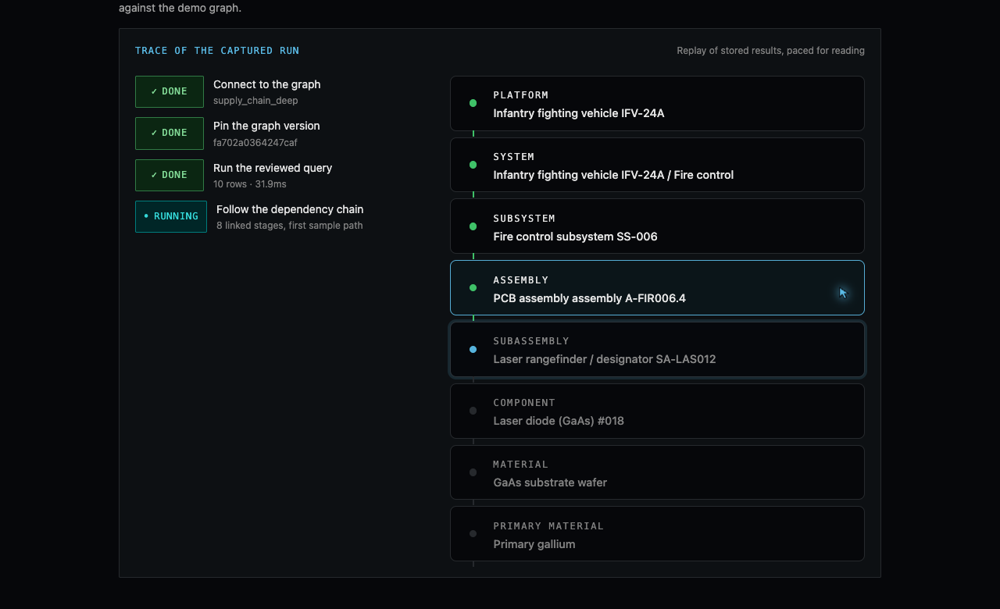
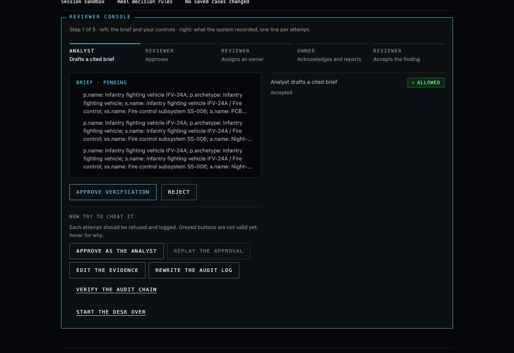

Captured graph evidence, cited verification, and accountable follow-up for a European defence-prime supply-chain analyst.
Beijing announced gallium export licensing on 3 July 2023, banned exports to the US in December 2024, then suspended the ban in November 2025. The suspension is scheduled to end 27 November 2026. For a defence-prime analyst the recurring question is the same:
Which of our platforms depend on primary gallium — and who is checking inventory, qualified alternates and delivery timing before that date?
Modelled dependencies across multiple bill-of-material tiers.
Pinned graph revision, cited rows and coverage gaps stay with the claim.
A named reviewer approves; a named owner reports the finding.
USGS 2026: China accounted for ~99% of worldwide primary low-purity gallium production. Gallium is on the European Commission's 2023 critical raw materials list. Neither fact verifies any synthetic platform's exposure.

A reviewed catalogue query against the versioned TuringDB supply-chain graph: connect → pin revision fa702a0364247caf → run → follow the typed chain Platform → System → Subsystem → Assembly → Subassembly → Component → Material → Primary gallium. 10 sampled rows in ~32ms; the bounded exposure question separately observed 34 platform names (limit 50). Synthetic names; sampled rows are not a total exposure count.

The interactive reviewer desk lets a jury try to cheat it: self-approve, replay the approval, acknowledge as the wrong person, edit the evidence, rewrite the audit log — each attempt is refused or detected against the real decision rules on a throwaway store.
| Scope | Work |
|---|---|
| Pre-event baseline through 15 Sep (678ab41) | Earlier winter-road/flood demos only: deterministic scoring, review gate, Postgres ledger. No defence workspace, no graph integration. |
| In the build window 2–4 Oct · 35 commits · +11,700 lines | One-command venue stack; TuringDB sidecar with 9-scenario reviewed catalogue, pinned reads, replay/diff and witness packs; browser SSO bridge (PKCE) with OIDC-verified review → assign → acknowledge → outcome under transactional audit; scoped work views, saved cases and linked revisions; guided two-minute demo player; date-scrubbed real-event stories (gallium deadline, Red Sea diversion); interactive reviewer desk; six-attack stress-test lab; run trace; VPS deployment with hosted invite-gated SSO. |
| Evidence | 150 TypeScript tests + 6 Python graph-boundary tests pass; typecheck, lint and production build clean. Live rehearsal on the submission revision ran the real sidecar, agent and UI against the graph at revision fa702a0364247caf. |
Next.js interface · TypeScript agent · SQLite case records · Python/TuringDB sidecar.
Next proof:
Ask: a defence-prime design partner to validate the recurring decision, plus an identity and data-handling review.